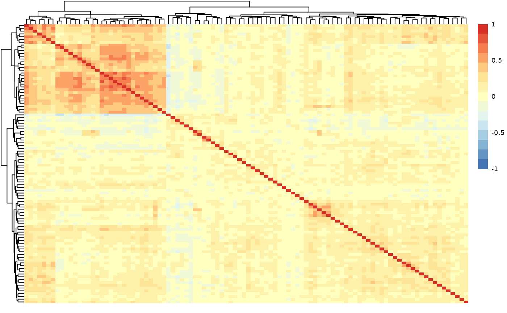
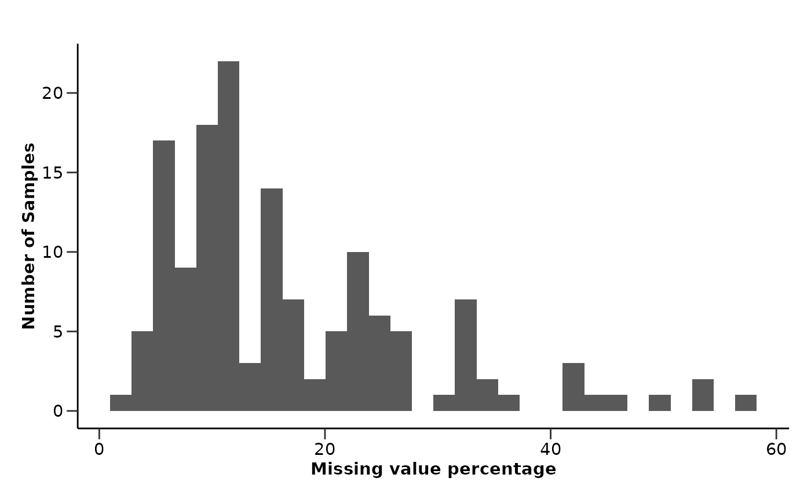
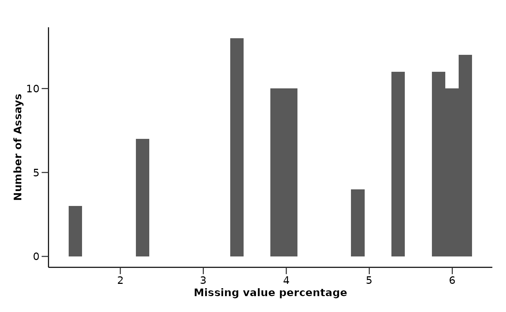
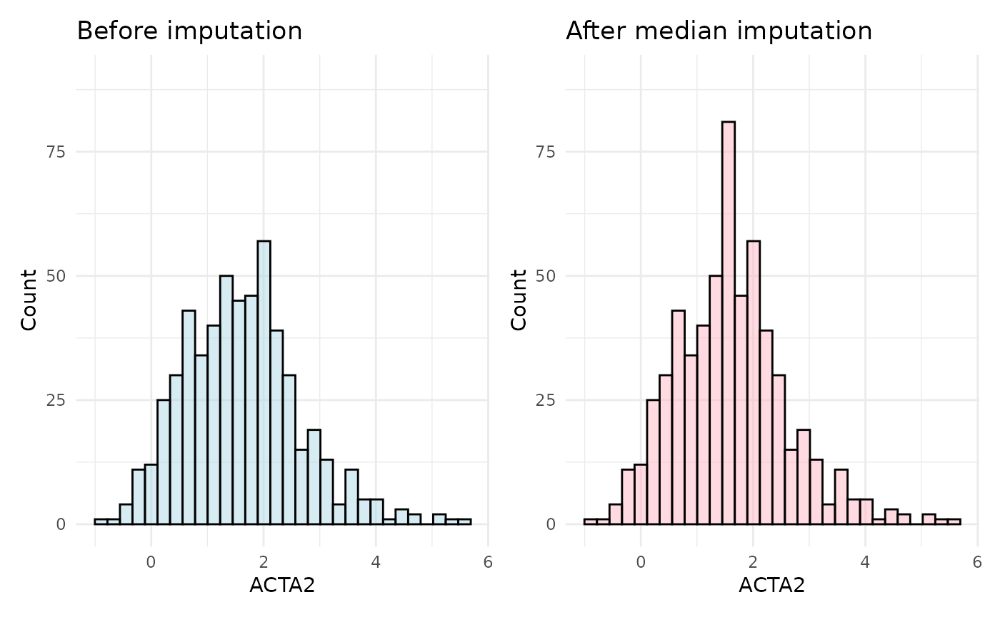
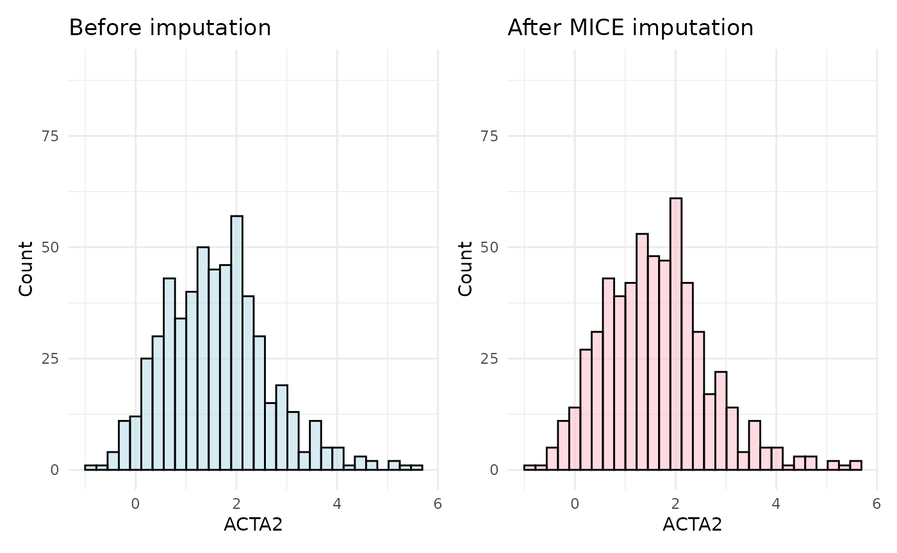
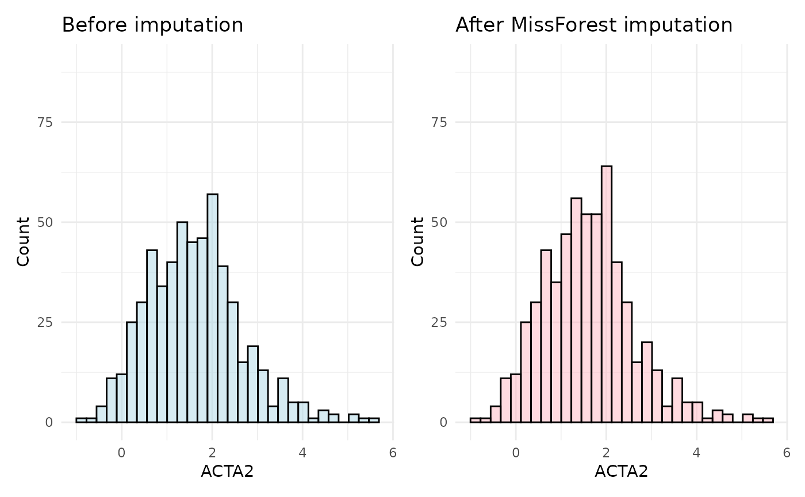

This vignette will guide you to the different imputation methods HDAnalyzeR offers. First of all, we will load the package, as well as dplyr, ggplot2 and patchwork for data manipulation and visualization. We will also load and widen the Olink example dataset.
library(HDAnalyzeR)
library(dplyr)
#>
#> Attaching package: 'dplyr'
#> The following objects are masked from 'package:stats':
#>
#> filter, lag
#> The following objects are masked from 'package:base':
#>
#> intersect, setdiff, setequal, union
library(ggplot2)
library(patchwork)
wide_data <- widen_data(example_data)We can simply check our data for NA values by using the
qc_summary_data().
qc_data <- qc_summary_data(wide_data, report = FALSE)
qc_data$na_row_dist
#> `stat_bin()` using `bins = 30`. Pick better value with `binwidth`.
qc_data$na_col_dist
#> `stat_bin()` using `bins = 30`. Pick better value with `binwidth`.
We will start the imputation with the simplest and fastest method,
which is the median imputation by using the
impute_median(). After the imputation, we will check the
sample distribution of a random Assay that contains missing values to
see if these values are imputed logically.
imputed_data <- impute_median(wide_data, show_na_percentage = FALSE)
plot_before <- wide_data |>
ggplot(aes(x = ACTA2)) +
geom_histogram(fill = "lightblue", color = "black", alpha = 0.5) +
labs(title = "Before imputation",
x = "ACTA2", y = "Count") +
ylim(0, 90) +
theme_minimal()
plot_after <- imputed_data |>
ggplot(aes(x = ACTA2)) +
geom_histogram(fill = "lightpink", color = "black", alpha = 0.5) +
labs(title = "After median imputation",
x = "ACTA2", y = "Count") +
ylim(0, 90) +
theme_minimal()
plot_before + plot_after
#> `stat_bin()` using `bins = 30`. Pick better value with `binwidth`.
#> Warning: Removed 36 rows containing non-finite outside the scale range
#> (`stat_bin()`).
#> `stat_bin()` using `bins = 30`. Pick better value with `binwidth`.
As observed in the plots, the distribution of the ACTA2 assay shifts slightly after imputation, with an exaggerated median value in the imputed data. This highlights a key drawback of median imputation: the more missing values there are, the greater the potential bias.
A better approach is to use the impute_knn() with 5
neighbors, which imputes missing values based on the 5-nearest
neighbors. We will use the same assay to compare the imputed data with
the original data.
imputed_data <- impute_knn(wide_data, k = 5, show_na_percentage = FALSE)
plot_before <- wide_data |>
ggplot(aes(x = ACTA2)) +
geom_histogram(fill = "lightblue", color = "black", alpha = 0.5) +
labs(title = "Before imputation",
x = "ACTA2", y = "Count") +
ylim(0, 90) +
theme_minimal()
plot_after <- imputed_data |>
ggplot(aes(x = ACTA2)) +
geom_histogram(fill = "lightpink", color = "black", alpha = 0.5) +
labs(title = "After KNN imputation",
x = "ACTA2", y = "Count") +
ylim(0, 90) +
theme_minimal()
plot_before + plot_after
#> `stat_bin()` using `bins = 30`. Pick better value with `binwidth`.
#> Warning: Removed 36 rows containing non-finite outside the scale range
#> (`stat_bin()`).
#> `stat_bin()` using `bins = 30`. Pick better value with `binwidth`.
In this case, the distribution of the ACTA2 assay is more similar to the original data after imputation. This is because the KNN imputation method uses the nearest neighbors to impute missing values, which is more accurate and representative than median imputation.
Another imputation method is the impute_mice(), which
uses multiple imputation by chained equations. We will use the default
values for the number of imputations, the number of iterations and the
imputation method.
imputed_data <- impute_mice(wide_data, show_na_percentage = FALSE)
plot_before <- wide_data |>
ggplot(aes(x = ACTA2)) +
geom_histogram(fill = "lightblue", color = "black", alpha = 0.5) +
labs(title = "Before imputation",
x = "ACTA2", y = "Count") +
ylim(0, 90) +
theme_minimal()
plot_after <- imputed_data |>
ggplot(aes(x = ACTA2)) +
geom_histogram(fill = "lightpink", color = "black", alpha = 0.5) +
labs(title = "After MICE imputation",
x = "ACTA2", y = "Count") +
ylim(0, 90) +
theme_minimal()
plot_before + plot_after
#> `stat_bin()` using `bins = 30`. Pick better value with `binwidth`.
#> Warning: Removed 36 rows containing non-finite outside the scale range
#> (`stat_bin()`).
#> `stat_bin()` using `bins = 30`. Pick better value with `binwidth`.
This imputed dataset is even closer to the original data, as the MICE imputation method uses multiple imputations to estimate missing values. This is a more robust and accurate method than median or KNN imputation. However, it is the most computationally expensive method.
Finally, we will use the impute_missForest() method,
which uses the random forest algorithm to impute missing values. We will
use the default values for the number of trees and the number of
iterations.
imputed_data <- impute_missForest(wide_data, show_na_percentage = FALSE)
#> parallelizing over the variables of the input data matrix 'xmis'
#> missForest iteration 1 in progress...
#> randomForest 4.7-1.1
#> Type rfNews() to see new features/changes/bug fixes.
#>
#> Attaching package: 'randomForest'
#> The following object is masked from 'package:ggplot2':
#>
#> margin
#> The following object is masked from 'package:dplyr':
#>
#> combine
#> Loading required package: foreach
#> Loading required package: rngtools
#> done!
#> estimated error(s): 0.6101514
#> difference(s): 0.00356532
#> time: 18.103 seconds
#>
#> missForest iteration 2 in progress...done!
#> estimated error(s): 0.6081468
#> difference(s): 0.0004044609
#> time: 17.911 seconds
#>
#> missForest iteration 3 in progress...done!
#> estimated error(s): 0.607769
#> difference(s): 0.0002782075
#> time: 18.098 seconds
#>
#> missForest iteration 4 in progress...done!
#> estimated error(s): 0.6085308
#> difference(s): 0.0002616854
#> time: 18.014 seconds
#>
#> missForest iteration 5 in progress...done!
#> estimated error(s): 0.6073743
#> difference(s): 0.0002792514
#> time: 17.936 seconds
plot_before <- wide_data |>
ggplot(aes(x = ACTA2)) +
geom_histogram(fill = "lightblue", color = "black", alpha = 0.5) +
labs(title = "Before imputation",
x = "ACTA2", y = "Count") +
ylim(0, 90) +
theme_minimal()
plot_after <- imputed_data |>
ggplot(aes(x = ACTA2)) +
geom_histogram(fill = "lightpink", color = "black", alpha = 0.5) +
labs(title = "After MissForest imputation",
x = "ACTA2", y = "Count") +
ylim(0, 90) +
theme_minimal()
plot_before + plot_after
#> `stat_bin()` using `bins = 30`. Pick better value with `binwidth`.
#> Warning: Removed 36 rows containing non-finite outside the scale range
#> (`stat_bin()`).
#> `stat_bin()` using `bins = 30`. Pick better value with `binwidth`.
The MissForest imputation method is the most accurate and also very robust, as it uses the random forest algorithm to impute missing values. This method is particularly useful for large datasets with complex relationships between variables.
In this vignette we showed that via HDAnalyzeR the user can impute their data with different methods, each of them with its own advantages and drawbacks. The user can choose the method that best fits their data and their analysis needs. When using KNN, MICE or MissForest imputation methods, the user should experiment with the parameters and look at the distributions of assays before and after to pick the most suitable.
📓 All methods assume that the data is missing at random, which is a common assumption in imputation methods. If the data are missing in a biased way (either technical or biological), the imputation methods may introduce bias into the data. In such cases, it is important to carefully consider the way the data were collected and what they represent.